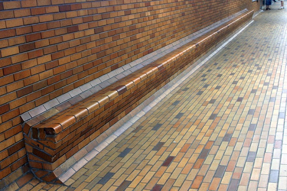

How well do you know the Montreal metro benches?
Scroll through the images until you recognize one

arrow_upward
arrow_downward
Choose the matching answer:
Bonaventure
Champ de mars
Lionel Groulx
Namur
Check my answer!